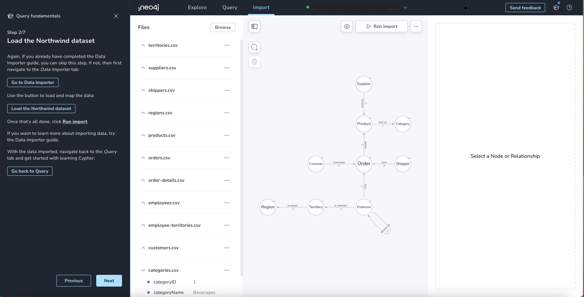
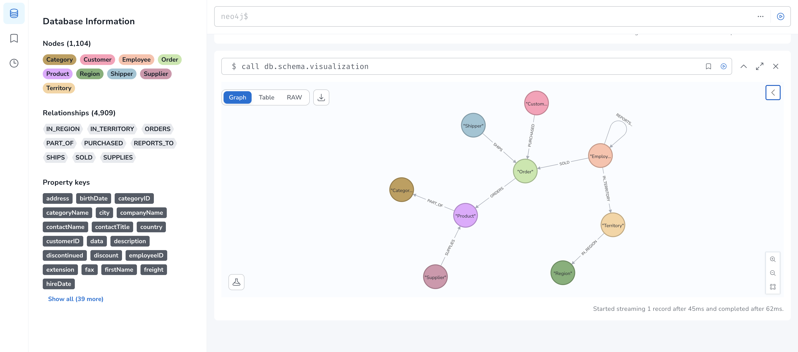

Comparing Cypher with SQL
Introduction
This guide shows anyone familiar with SQL how to understand Cypher® and write the equivalent Cypher queries. The Northwind database, used for a long time to demonstrate relational database concepts, helps to illustrate how to translate SQL queries into Cypher, showcasing the similarities and differences between the two languages.
Before diving into the details, it is essential to understand that while both SQL and Cypher are declarative query languages, Cypher is specifically designed for querying graphs. Like in SQL, important concepts of Cypher include clauses, keywords, expressions, operators, and functions. Unlike SQL, which deals with relational databases, Cypher is centered around expressing graph patterns. Graph pattern matching is the core technique in Cypher, enabling creation, navigation, description, and data extraction from a graph by applying declarative patterns.
The page: Query a Neo4j database using Cypher covers its basics.
Cypher allows you to chain multiple query parts together, enabling the composition of complex queries. You can mix read and write operations within a single statement. The read operation can provide inputs for the subsequent write operation or, following after the write operation, return relevant subsets to the caller.
You can use Cypher to update the graph structure and data and even to ingest large amounts of CSV data.
With user-defined procedures and functions, you can extend the language with functionality that you need but is not yet available.
For more information about the Cypher query language, refer to the Neo4j Cypher Manual and the Cypher Cheat Sheet.
Northwind example model
The Northwind database represents the data storage of a retail application. It contains customers, products, orders, employees, shippers, and categories as well as their interactions.
Relational databases store data in tables with a fixed structure (schema), each column having a name, type, length, constraints, etc. References between tables are represented by repeating the primary key of one table as a column in another as a foreign key. For many-to-many references, JOIN-tables (or link-tables) are needed as an artificial construct between the connected tables.
Graph databases store data in a graph with nodes and relationships between them (refer to the property graph model for more information).
For a sensible relational model, the transformation into a graph is not hard, as rows of entity tables are converted into nodes and foreign-key relationships and JOIN-tables into relationships. Nodes and relationships can hold arbitrary properties (key-value pairs) without the need for a fixed schema.
Refer to the relational and graph models below when considering the data structures in the following queries.

It is recommended to familiarize yourself with the guides on data modeling and data importing into Neo4j.
Explore Cypher queries: from basic to advanced
This guide intends to introduce Cypher queries by comparing them with the equivalent SQL statements.
You can run all the Cypher queries below using an AuraDB Free instance and the Neo4j Workspace guide Query fundamentals.
-
Load the Northwind dataset by following instructions in the guide.
Figure 3. Guide Query fundamentals in Neo4j Workspace -
After importing the data, run the command
call db.schema visualizationin Query to check the imported data vs the model. Your output should be the following:Figure 4. Model of the Nortwind dataset in Workspace Query
|
Graph data modeling is a flexible task.
You can create your own model of the Northwind dataset.
Use these |
|
The Cypher queries below end with the semicolon |
Find all products
Select and return records
To select and return records in SQL, select everything from the products table.
SELECT p.*
FROM products as p;Similarly in Cypher, you MATCH a simple pattern: all nodes with the label :Product and RETURN them.
MATCH (p:Product)
RETURN p;Field access, ordering, and paging
It is more efficient to return only a subset of attributes, like ProductName and UnitPrice.
You can also order by price and only return the 10 most expensive items.
SELECT p.ProductName, p.UnitPrice
FROM products as p
ORDER BY p.UnitPrice DESC
LIMIT 10;Since the statements are similar except for the pattern matching part, you can copy and paste the changes from SQL to Cypher. But remember that labels, relationship types, and property names are case sensitive in Neo4j. For more details on naming rules, see the Cypher Manual → Naming rules and recommendations.
MATCH (p:Product)
RETURN p.productName, p.unitPrice
ORDER BY p.unitPrice DESC
LIMIT 10;Find a single product by name
Filter by equality
If you only want to look at a single product, for example, Chocolade, you can filter data in SQL using the WHERE clause.
SELECT p.ProductName, p.UnitPrice
FROM products AS p
WHERE p.ProductName = 'Chocolade';In Cypher, the WHERE clause belongs to the MATCH statement.
MATCH (p:Product)
WHERE p.productName = 'Chocolade'
RETURN p.productName, p.unitPrice;There is a shortcut in Cypher if you MATCH for a labeled node with a certain property attribute.
MATCH (p:Product {productName:'Chocolade'})
RETURN p.productName, p.unitPrice;Indexing
If you want to match quickly by a specific node label and attribute combination, it makes sense to create an index for that pair, if you haven’t already done that during the import. For more details on how to create indexes, visit the Cypher manual → Indexes for search performance. Indexes in Cypher are only used for finding the starting points of a query, all subsequent pattern matching is done through the graph structure. Cypher supports range, text, point, lookup, full-text, and vector indexes.
CREATE INDEX Product_productName IF NOT EXISTS FOR (p:Product) ON p.productName;
CREATE INDEX Product_unitPrice IF NOT EXISTS FOR (p:Product) ON p.unitPrice;Filter products
Filter by list/range
You can filter by multiple values in SQL.
SELECT p.ProductName, p.UnitPrice
FROM products as p
WHERE p.ProductName IN ('Chocolade','Chai');This can also be achieved in Cypher, which has full collection support, including not only the IN operator but also collection functions, predicates, and transformations.
MATCH (p:Product)
WHERE p.productName IN ['Chocolade','Chai']
RETURN p.productName, p.unitPrice;Filter by multiple numeric and textual predicates
Filtering can go further. For example, the below query tries to find expensive products starting with "C".
SELECT p.ProductName, p.UnitPrice
FROM products AS p
WHERE p.ProductName LIKE 'C%' AND p.UnitPrice > 100;In Cypher, the LIKE operator is replaced by the STARTS WITH, CONTAINS, and ENDS WITH operators (all three of which are index-supported):
MATCH (p:Product)
WHERE p.productName STARTS WITH 'C' AND p.unitPrice > 100
RETURN p.productName, p.unitPrice;You can also use a regular expression, like p.productName =~ '^C.*'.
Joining products with customers
Join records, distinct results
In SQL, if you want to see who bought Chocolade, you can join the four tables together. Refer to the model (ER-diagram) to recall what the model looks like.
SELECT DISTINCT c.CompanyName
FROM customers AS c
JOIN orders AS o ON (c.CustomerID = o.CustomerID)
JOIN order_details AS od ON (o.OrderID = od.OrderID)
JOIN products AS p ON (od.ProductID = p.ProductID)
WHERE p.ProductName = 'Chocolade';Using Cypher, the graph model is much simpler, as there is no need to JOIN tables.
Expressing connections as graph patterns is easier to read too.
MATCH (p:Product {productName:'Chocolade'})<-[:ORDERS]-(:Order)<-[:PURCHASED]-(c:Customer)
RETURN DISTINCT c.companyName;New customers without existing orders
OUTER JOINS, aggregation
In SQL, if you rephrase the question as "What have I bought and paid in total?", the JOIN stays the same; only the filter expression changes.
However, the situation is different if you have customers without any orders and still want to return them.
In that case, you have to use OUTER JOINS to make sure that results are returned even if there are no matching rows in other tables.
SELECT p.ProductName, sum(od.UnitPrice * od.Quantity) AS Volume
FROM customers AS c
LEFT OUTER JOIN orders AS o ON (c.CustomerID = o.CustomerID)
LEFT OUTER JOIN order_details AS od ON (o.OrderID = od.OrderID)
LEFT OUTER JOIN products AS p ON (od.ProductID = p.ProductID)
WHERE c.CompanyName = 'Drachenblut Delikatessen'
GROUP BY p.ProductName
ORDER BY Volume DESC;In your Cypher query, the MATCH between customer and order becomes an OPTIONAL MATCH, which is the equivalent of an OUTER JOIN.
Non existing nodes and relationships will then have a null value, which will result in attributes being null and not being aggregated by sum.
MATCH (c:Customer {companyName:'Drachenblut Delikatessen'})
OPTIONAL MATCH (p:Product)<-[o:ORDERS]-(:Order)<-[:PURCHASED]-(c)
RETURN p.productName, toInteger(sum(o.unitPrice * o.quantity)) AS volume
ORDER BY volume DESC;Top-selling employees
Aggregation, grouping
The previous example mentioned aggregation. By summing up product prices and ordered quantities, an aggregated view per product for the customer was provided.
You can use aggregation functions like sum, count, avg, max both in SQL and Cypher.
In SQL, aggregation is explicit so you have to provide all grouping keys again in the GROUP BY clause.
If you want to see the top-selling employees, run the following query:
SELECT e.EmployeeID, e.FirstName, e.LastName, COUNT(*) AS Count
FROM Employee AS e
JOIN Orders AS o ON (o.EmployeeID = e.EmployeeID)
GROUP BY e.EmployeeID, e.FirstName, e.LastName
ORDER BY Count DESC
LIMIT 10;In Cypher grouping for aggregation is implicit.
As soon as you use the first aggregation function, all non-aggregated columns automatically become grouping keys.
Also, additional aggregation functions like collect, percentileCont, stdDev are available.
MATCH (:Order)<-[:SOLD]-(e:Employee)
WITH e, count(*) as cnt
ORDER BY cnt DESC LIMIT 10
RETURN e.employeeID, e.firstName, e.lastName, cntEmployee territories
Collecting master-detail queries
In SQL, one of the challenging scenarios is dealing with master-detail information. You have one main entity (master, head, parent) and many dependent ones (detail, position, child). Usually you either query it by joining both and returning the master data multiple times (once for each detail) or by only fetching the primary key of the master and then pulling all detail rows via that foreign key.
For instance, if you look at the employees per territory, then the territory information is returned for each employee.
SELECT e.LastName, et.Description
FROM Employee AS e
JOIN EmployeeTerritory AS et ON (et.EmployeeID = e.EmployeeID)
JOIN Territory AS t ON (et.TerritoryID = t.TerritoryID);In Cypher, you can either return the structure like in SQL or use the collect() aggregation function, which aggregates values into a collection (list, array).
This way, only one row per parent, containing an inlined collection of child values, is returned.
This also works for nested values.
MATCH (t:Territory)<-[:IN_TERRITORY]-(e:Employee)
RETURN t.territoryDescription, collect(e.lastName);Product categories
Hierarchies and trees, variable length joins
If you have to express category-, territory- or organizational hierarchies in SQL, it is usually modeled with a self-join via a foreign key from child to parent. Adding data is not problematic, and neither are single-level queries. As soon as you get into multi-level queries, the number of joins drastically increases, especially if your level depth is not fixed.
Taking the example of the product categories, you have to decide upfront up to how many levels of categories you want to query.
Only three potential levels are shown here (which means 1+2+3 = 6 self-joins of the ProductCategory table).
SELECT p.ProductName
FROM Product AS p
JOIN ProductCategory pc ON (p.CategoryID = pc.CategoryID AND pc.CategoryName = "Dairy Products")
JOIN ProductCategory pc1 ON (p.CategoryID = pc1.CategoryID
JOIN ProductCategory pc2 ON (pc2.ParentID = pc2.CategoryID AND pc2.CategoryName = "Dairy Products")
JOIN ProductCategory pc3 ON (p.CategoryID = pc3.CategoryID
JOIN ProductCategory pc4 ON (pc3.ParentID = pc4.CategoryID)
JOIN ProductCategory pc5 ON (pc4.ParentID = pc5.CategoryID AND pc5.CategoryName = "Dairy Products")
;Cypher is able to express hierarchies of any depth using only the appropriate relationships.
Variable levels are represented by variable length paths, which are denoted by a star * after the relationship type and optional limits (min..max).
MATCH (p:Product)-[:PART_OF]->(l:Category)-[:PARENT*0..]-(:Category {name:'Dairy Products'})
RETURN p.name;Was this page helpful?